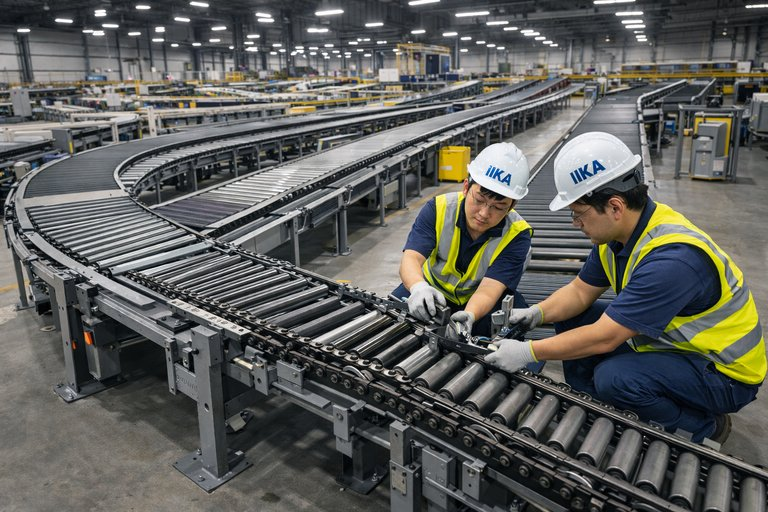
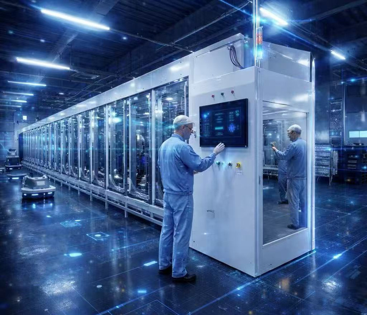
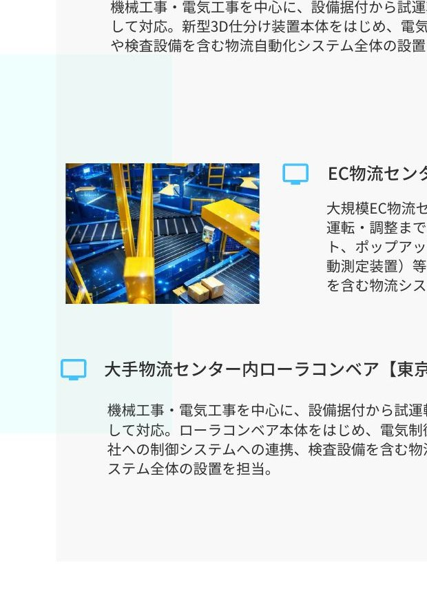
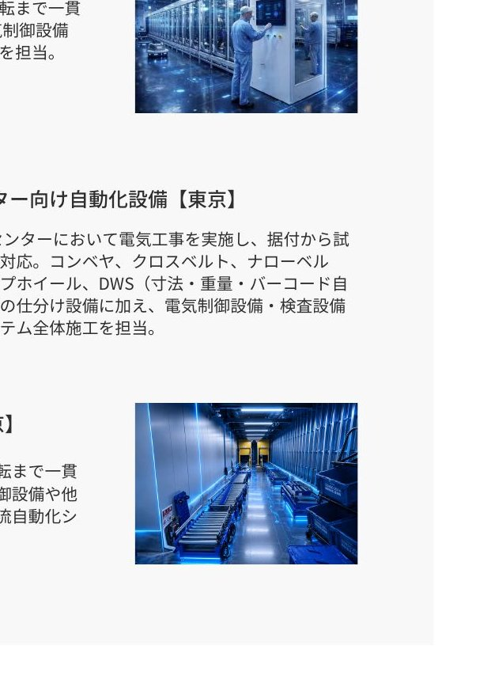
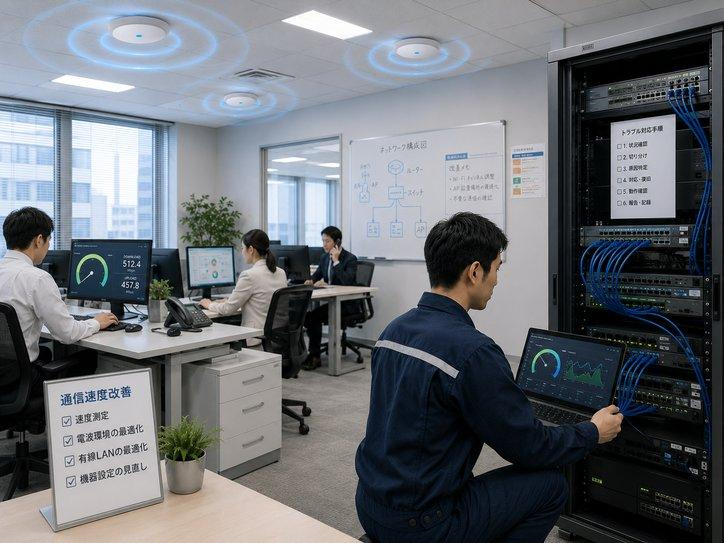
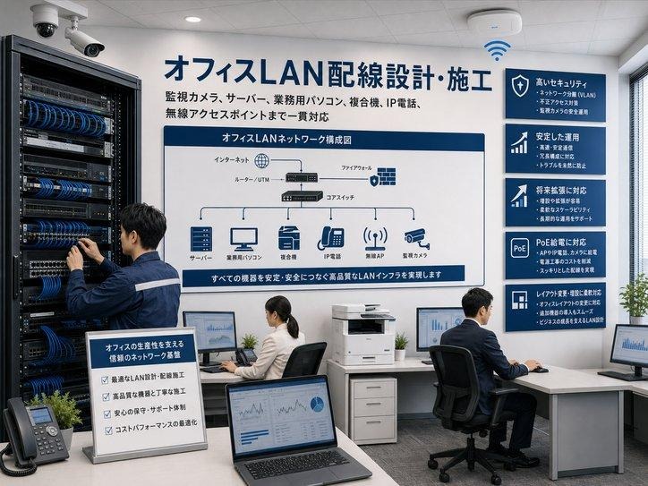
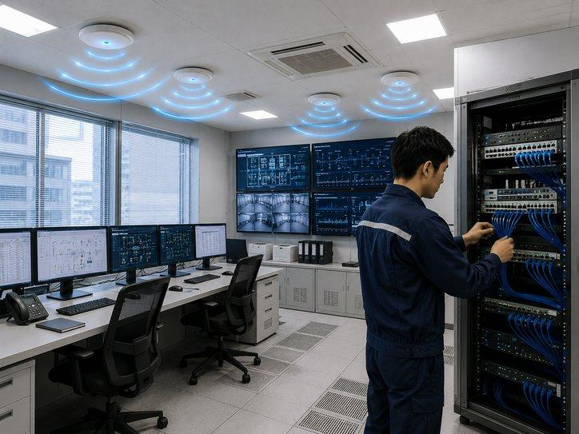
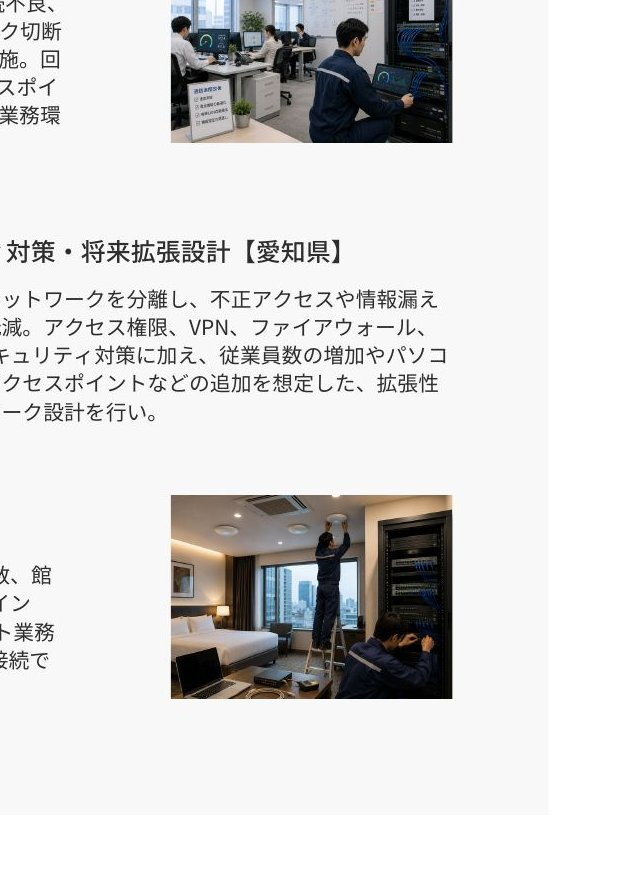

TECHNOLOGY WITH RESPONSIBILITY
物流・製造業向けの自動化設備の据付工事から、ネットワーク構築、AI技術を活用した次世代自動化開発まで。現場第一の姿勢で、一貫したソリューションを提供します。
「真心」「誠意」「革新」— この三つを軸に、お客様と共に歩みます。
お客様の課題に真正面から向き合い、本質的な解決策を提供します。
誠実な対応と確かな技術で、お客様の信頼に応え続けます。
AI・ロボティクスなど最先端技術で、物流の未来を創造します。
据付から保守までワンストップ一体対応
ネットワーク・制御・ソフトウェア迅速な復旧
技術力 × 柔軟性
多言語 × コストバランス
物流・自動化分野の豊富な実績
物流自動化の全プロセスをカバーする4つの柱
機械工事および電気工事を中心に、鋼製プラットフォームの土木設置工事から、据付後の試運転・調整・保守まで一貫対応。ベルトコンベヤ、ローラーコンベヤ、チェーンコンベヤ、カーブコンベヤ、伸縮コンベヤをはじめ、電気制御設備や検査設備を含む物流システム全体の設置を実施。
自動化設備の据付工事・電気工事・試運転調整から、運用開始後の定期点検・消耗品管理・緊急対応まで、設備ライフサイクル全体を一貫してサポート。
Wi-Fi環境最適化、LAN配線設計・施工、ネットワーク障害調査・通信環境改善、セキュリティ対策・将来拡張設計、ルーター・アクセスポイント設計まで、施設全体のITインフラを一貫して構築。
中国のトップクラスの研究者・先端技術ネットワークを活用。自動運転車両、ロボティクス、AIビジョン、システム連携の分野で、技術調査・メーカー選定からPoC・現場適合性検証、本導入・運用改善までを支援。
全国各地の物流・施設プロジェクトで確かな成果を創出

機械工事および電気工事を中心に、鋼製プラットフォームの一部土木設置工事から、据付後の試運転・調整・保守まで一貫対応。

空港物流施設における大型判別機および自動仕分けシステムの設置工事。コンベヤ、クロスベルト、ナローベルト、ポップアップホイール、DWSなどの仕分け設備を含む物流システム全体の施工を担当。

機械工事・電気工事を中心に、設備据付から試運転まで一貫して対応。新型3D仕分け装置本体をはじめ、電気制御設備や検査設備を含む物流自動化システム全体の設置を担当。

大規模EC物流センターにおいて電気工事を実施し、据付から試運転・調整まで対応。コンベヤ、クロスベルト、DWS等の仕分け設備に加え、電気制御設備・検査設備を含む物流システム全体施工を担当。

倉庫内、電波状況や利用端末数、建物構造を調査し、Wi-Fi環境を最適化。アクセスポイントの配置・台数・設定を見直すことで、安定した無線通信環境を実現。

オフィス内の監視カメラ、サーバー、業務用パソコン等の接続に対応したLAN配線を設計・施工。将来の機器増設を考慮し、配線ルート、通信機器、PoE給電、ネットワーク構成まで一貫対応。

ホテルの客室数、宿泊者数、従業員数、接続端末数、館内レイアウトに合わせて、ルーター、アクセスポイント、PoEスイッチなどを選定。

オフィス内で発生した通信速度の低下、Wi-Fi接続不良などに対し、現地調査および原因切り分けを実施。セキュリティ対策と拡張性の高いネットワーク設計を実施。
Beyond imported technology, we deliver tailored systems for Japanese worksites.
中国の著名大学、業界団体、研究機関との幅広いネットワークを活用。
中国科学院をはじめ、先端研究機関で開発経験を持つ研究者・技術者と連携。
特定メーカーに縛られず、自動運転車、AMR、AGV、人型・物流ロボットを横断的に比較し、最適な技術を選定。
日本国内に物流設備、機械、電気制御、システム、AIの専門エンジニアが在籍。
中国側の研究者・メーカー・技術者と、日本側のIIKAエンジニア・据付・保守担当が連携。導入後まで一貫して支援。
物流・製造現場においては、人手不足への対応や生産性向上に加え、安全かつ安定した稼働を支える体制づくりがますます重要となっております。弊社は「現場第一」の姿勢を軸に、確かな技術と誠実な対応をもとに、お客様と共に歩み続けてまいります。
| 会社名 | 株式会社IIKA（IIKA Co., Ltd.） |
|---|---|
| 設立 | 2022年8月 |
| 代表者 | 代表取締役 藤原 愛 |
| 資本金 | 500万円 |
| 所在地 | 〒450-0002 名古屋市中村区名駅5丁目2-17 プログレス名駅 13F |
| 電話 | 050-7108-0861 |
| メール | info@iika-jp.com |
| 公式サイト | www.iika-jp.com |
| 事業内容 |
|
物流自動化に関するご相談はお気軽にどうぞ
〒450-0002
名古屋市中村区名駅5丁目2-17
プログレス名駅 13F